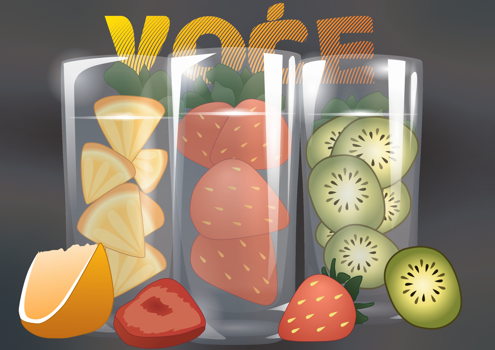
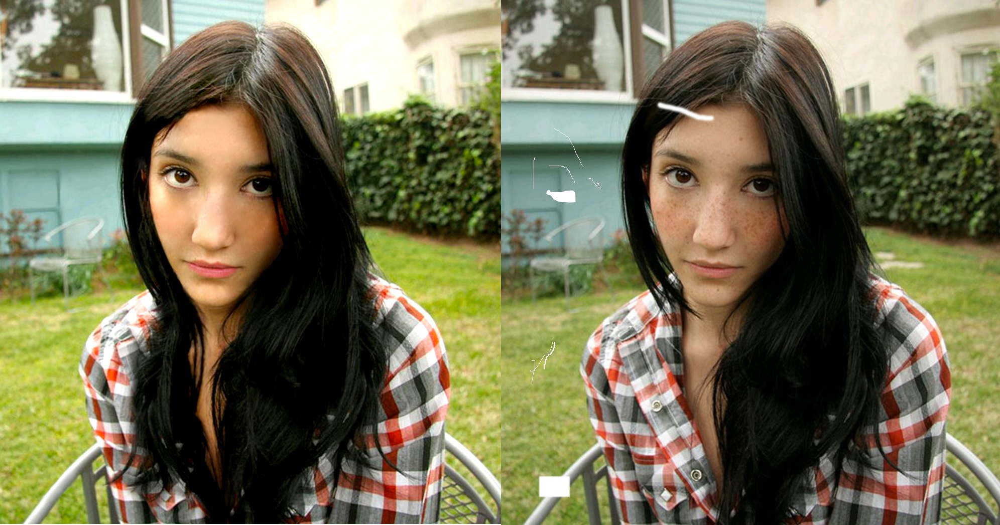
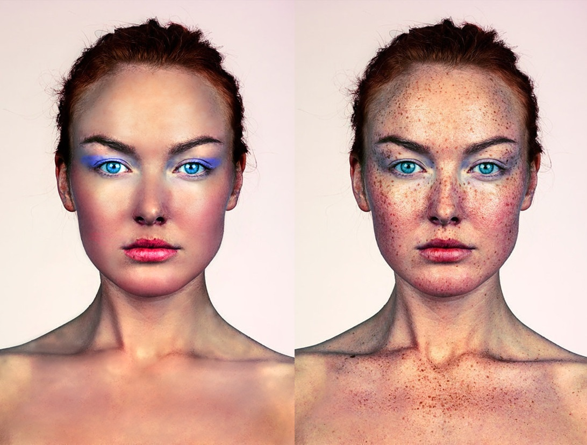
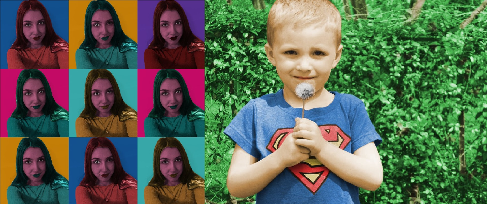

Ovdje vam želim pokazati sve radove koje smo radili tijekom semestra, a uključuju razne formate, od običnih slika do gifova i videa. Kroz ovaj semestar prolazili smo kroz mnoge programe, a ovdje ću prikazati sve što sam ja radila u Adobe Illustratoru, GIMPu i Shotcutu.
Ovo je prva vježba urađena za ovaj semestar. Prvo smo u programu FontForge morali napraviti vlastiti font, a zatim smo taj isti font koristili u programu Adobe Illustratoru, gdje smo koristeći maske uređivali prvi inicijal imena i prezimena.
Ovo je druga vježba koja se također izvodila u Adobe Illustratoru. Ovdje smo naučili neke nove tehnike poput rotacije, skaliranja i zrcaljenja, te smo također radili s ispunama boja i obrisa. Lijevu sliku sam stvorila prateći video tutorial, dok sam desnu, koja prikazuje pumu, samostalno izradila.
U ovoj vježbi naučili smo koristiti gradijente, među kojima postoje tri vrste: linearni, radijalni i slobodnoformni. Također smo se upoznali s Mesh gradijentom, koji omogućuje različite prijelaze boja putem mreže točaka, pri čemu svaka točka nosi informaciju o boji područja oko nje. Osim toga, koristili smo tehniku transparentnosti te neke tehnike iz prethodne vježbe.
Zatim slijedi naš prvi projektni zadatak kojim smo završili ovo poglavlje vezano uz Illustrator. U njemu smo primijenili sve tehnike koje smo naučili, uključujući korištenje vlastitog fonta. Slika prikazuje tri čaše ispunjene voćem, pri čemu su upotrijebljeni gradijenti, Mesh gradijenti i transparentnost kako bi se postigli realistični i atraktivni vizualni efekti.
Nakon dugog vremena rada u vektorskoj grafici, napokon prelazimo na piksel grafiku, a ja sam radila u programu pod imenom GIMP. U ovoj vježbi smo naučili koristiti tehniku retuširanja koja uključuje razne alate poput "Heal" i "Clone". Također smo koristili neke od alata za transformacije, poput "Flip" i "Unified Transform". Uz pomoć ovih alata uspjeli smo ispraviti sve nepravilnosti na slici.
 Dalje smo prešli na tehniku koloriranja slike koja se može primijeniti na crno-bijele slike ili slike u boji kojima želimo promijeniti nijansu određenih područja. Prvo bismo selekcijom stvorili maske kojima skrivamo ili otkrivamo efekte kolorizacije, a boja se aplicira na zaseban sloj. Naš zadatak je bio stvoriti vlastitu fotografiju od vlastitih slika po uzoru na rad Andyja Warhola "Marilyn Monroe".
Nadalje, imamo sedmu vježbu i projektni zadatak koji su slični. U sedmoj vježbi radili smo fotomontažu koristeći neke vlastite slike te pazeći na sjene i svjetlo. Prvo bismo selektirali određene dijelove koje želimo, zatim ih izrezali i postavili na željeno mjesto. Za složenije selekcije koristili smo alate poput "Quick Mask" ili "Brush" i "Eraser" za vlastito crtanje maski. Što se tiče projektnog zadatka, u njemu su korištene sve tehnike koje smo naučili u piksel grafici, od dodavanja teksta do fotomontaže. Lijeva slika prikazuje sedmu vježbu, a desna projektni zadatak, pri čemu smo primijenili sve naučene vještine kako bismo stvorili završni rad.

Stvaranje kinemagrafa bila je iduća vježba, a izvodila se kombinacijom dva različita programa: GIMP i Shotcut. Shotcut je program koji se koristi za izradu i uređivanje videa, a koristeći ga u kombinaciji sa GIMP-om mi spajamo pokretnu i statičnu grafiku, odnosno slike i video. Na ovaj način stvorili smo GIF format gdje je većina grafike statična, a samo mali dio je animirani. Prvo bismo iz originalnog videa uzeli jednu sliku i stvorili prozor na dijelu gdje želimo da bude pokretno. Zatim bismo takvu sliku ubacili u Shotcut, gdje bismo namjestili da se jedan dio kreće, a drugi ostane miran.